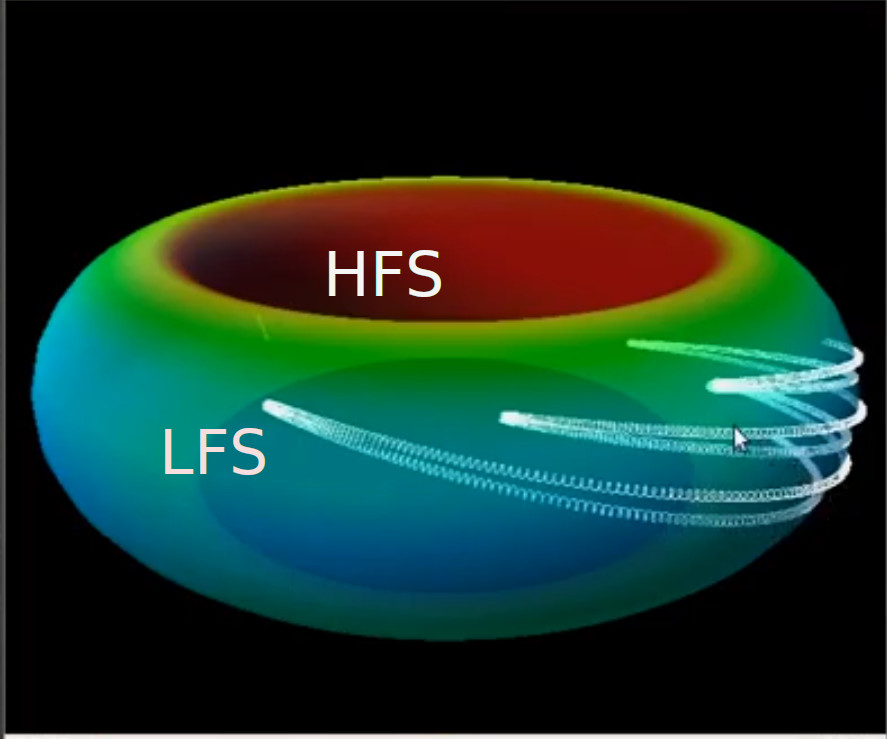
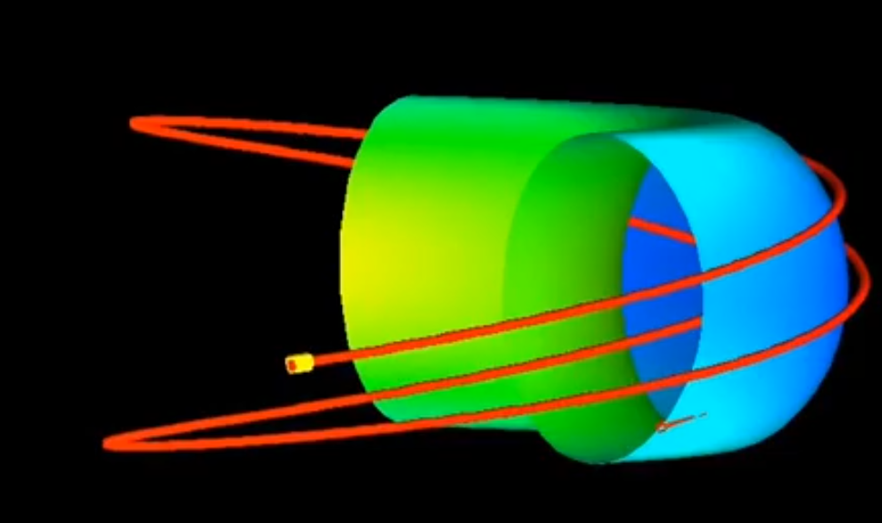
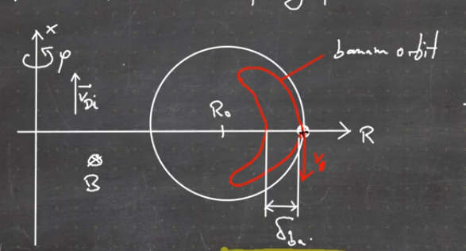

On the bootstrap current in tokamaks
To achieve fusion, we need to confine the plasma for sufficient time. Without instabillities, the majority of confinement comes from Coulomb collisions, but transport of particles and energy is generally not so simple, leading to anamolous transport mechanisms.
In a cylindrical plasma, the collisional transport of particles and energy boils down to a diffusion process. Particles collide with a characteristic rate time \(\tau_c\). The collision allows the particles to ‘step’ accross magnetic field with a step length equal to their larmor radius, \(\rho\). This yields us a diffusion coefficient, \(\mathcal{D} \sim \rho^2 / \tau_c\), of particles and energy diffusing radially outwards.
For a toroidal plasma with twisted helical field lines, this is not the case, which is why transport in toroidal plasma is refered to as neoclassical transport. An example of such a change in transport is banana transport.
Gradient drift
The magnetic field strength is not toroidally uniform; it is strongest closest to the donut hole, the high field side (HFS), gradually getting weaker radially outwards the edge, the low field side (LFS) (see the Fig. 1 (a)). The drift in particle velocity due to the gradient of the magnetic field \[v_D^{\nabla \vec{B}} = - \frac{W_\perp}{q} \frac{\nabla_T \vec{B} \times \vec{B}}{B^3} \tag{1}\]
Banana regime
Due to the drift velocity, Particles with \(v_{||} < v_\perp\) (parallel/perpendicular to magnetic field lines) can be reflected from LFS to HFS, similar to the magnetic mirror. This has the result that no full poloidal turn is possible (Fig. 1) and the particles are trapped in the LFS.



The trapped particles transport energy differently. Then of interest is the fraction of trapped particles, \(f_t = \sqrt{2\epsilon}\), for a Maxwellian distribution of velocities, where \(\epsilon = a/R\).
Bootstrap current
Due to the toroidal electric field, the radial current density profile is not flat. Friction related to transport from particles in banana orbit (collisions between trapped and non-trapped particles) leads to a diffusion driven current, otherwise known as the bootstrap current. This is different than the conventional current from the central solenoid.
The current is brought on by the change in the \(\nabla_T \vec{B} \times \vec{B}\) component from LFS to HFS, as the \(B_{pol}\) is rotating around the outer plamsa, and \(\nabla \vec{B}\) constant pointing inwards from the drift. This corresponds to the following additional drifts:
- For particles near the LFS, i.e., \(r > R\), we will get a drift (with charge dependence due to eq. Eq. 1)
- ions: in the direction of the current
- electrons: opposite direction of current
- For particles near HFS:
- ions: opposite direction of the current
- electrons: opposite direction of current
Since particles spend a longer time in the reflecting stage of the banana orbit (??), there is a resulting net drift in the direction of the current, as the trapped particlestransfer momentum to passing particles carrying the current.
The name derives itself from the idea that the particles themselves are contributing to the confining poloidal field, hence the plasma itself is bootstraping its confinement, pulling oneself.
A simple quantitive estimation is \(j_{bs} = -\sqrt{\epsilon} \frac{1}{B_\theta} \frac{dp}{dr}\), where the \(B_\theta\) the poloidal field strength and \(p\) the plasma pressure.
The bootstrap current is important for stability analysis.
Very complicated formula that I use
In1:
\[\langle \vec{j}_b \cdot \vec{B} \rangle = \frac{\mu_0 f(\Psi) x p_e}{D(x)} \left( c_1 \frac{\nabla p_e}{p_e} + c_2 \frac{\nabla p_i}{p_i} + c_3 \frac{\nabla T_e}{T_e} + c_4 \frac{\nabla T_i}{T_i} \right)\]
where:
- \(f(\Psi) = RB_\phi(\Psi) / \mu_0\)
- If we want to do this integral approximation, we will need to transform the magnetic field into flux coordinates…
- \(x\) is ratio of number of trapped to circulating particles, which can be approximated to \(\simeq \sqrt{2}\epsilon^{1/2}\) with \(\epsilon=a/R\)
- For \(D(x) = 2.4 + 5.4x + 2.6x^2\) and used sporatically in below coefficients
- \(c_1 = \frac{4.0 + 2.6x}{(1+0.2\nu_{*e}^{1/2} + 1.07\nu_{*e})(1+1.07\epsilon^{3/2}\nu_{*e})}\)
- \(c_2 = \frac{T_i}{T_e} c_1\)
- \(c_3 = \frac{7.0 + 6.5x}{(1+0.57\nu_{*e}^{1/2} + 0.61\nu_{*e})(1+0.61\epsilon^{3/2}\nu_{*e})} - \frac{5}{2}c_1\)
- \(c_4 = \left( \frac{d+0.35\nu_{*i}^{1/2}}{1+0.7\nu_{*i}^{1/2}} +2.1\epsilon^3\nu_{*i}^{2}\right) \frac{1}{(1+\epsilon^3\nu_{*i}^{2})(1+ \epsilon^3\nu_{*e}^{2})}c_2\)
- \(d = \frac{1.17}{1+0.46x}\)
- \(\nu_{*j}=\frac{\nu_j}{\epsilon \omega_{bj}}\)
- where \(\nu_e = \tau_e^{-1}\), \(\nu_i = \tau_i^{-1}\) and \(\omega_{bj} = \epsilon^{1/2}(T_j/m_j)^{1/2} / Rq\)
- where the electron collision time for electron collisions with ions is defined as \(\tau_e = \frac{12\pi^{3/2}}{\sqrt{2}}\frac{\epsilon_0 m_e^{1/2}T_e^{3/2}}{n_iZ^2e^4\ln \Lambda}\) but can be simplified for singly charged ions to be \(6.4\times 10^{14} \frac{T_e^{3/2}}{n}\), with \(\ln \Lambda = 17\) and \(T_e\) in keV.
- where the ion collision time characterizing ion collisions with other ions \(\tau_i = 12\pi^{3/2} \frac{\epsilon_0^2 m_i^{1/2}T_i^{3/2}}{n_iZ^4e^4\ln\Lambda_i}\); \(\Lambda_i = 1.1\Lambda\) but can be simplified for singly charged ions to be \(6.6\times 10^{17} \left( \frac{m_i}{m_p}\right)^{1/2} \frac{T_i^{3/2}}{n\ln\Lambda_i}\) for \(T_i\) in keV
- where \(\nu_e = \tau_e^{-1}\), \(\nu_i = \tau_i^{-1}\) and \(\omega_{bj} = \epsilon^{1/2}(T_j/m_j)^{1/2} / Rq\)
We can make even more simplifying assumptions, namely \(n_e \approx n_i\), \(T_e \approx T_i\) \(\Rightarrow p_e = p_i\), reducing to
\[ j_b = \langle \vec{j}_b \cdot \vec{B} \rangle = \frac{\mu_0 f(\Psi) x p_e}{D(x)} \left( 2(c_1 + c_2)\frac{\nabla p_e}{p_e} + 2(c_3 + c_4)\frac{\nabla T_e}{T_e}\right)\]
Fun facts
Although one would want to maximize the bootstrap current, in stellarators we actually minimize it as to not fuck up the delicate magnetic geometry.
References
1.
Wesson, J. Tokamaks; 3th ed. (Oxford Univ. Press, 2011).